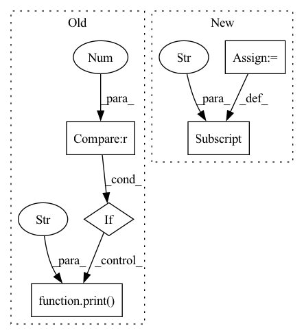

Pattern ID :26598
Before Change
sec_dim = self.enc_config["m"] + self.dec_config["p"] // original it was not defined but in tf-keras we need to define it
last_reshape = layers.Reshape((sec_dim,), name="last_reshape")(last_concat) // (None, 50)
if self.verbosity > 2 :
print("reshape:" , last_reshape)
result = layers.Dense(self.dec_config["p"], name="eq_22")(last_reshape) // (None, 30) // equation 22
if self.verbosity > 1:After Change
self.config["dec_config"] = self.dec_config
self.config["enc_config"] = self.enc_config
self.config["use_true_prev_y"] = self.use_true_prev_y
self.de_LSTM_cell = layers.LSTM(self.dec_config["p"], return_state=True, name="decoder_LSTM")
self.de_densor_We = layers.Dense(self.enc_config["m"])In pattern: SUPERPATTERN
Frequency: 4
Non-data size: 5
Instances Fragment ID: 79672797
Project Name: atrcheema/dl4seq
Commit Name: 409838a7356495c3b2fd2891dbd1ecde7abf736d
Time: 2021-11-10
Author: ather_abbas786@yahoo.com
File Name: ai4water/tf_models.py
M Class Name: DualAttentionModel
N Class Name: DualAttentionModel
M Method Name: build(2)
N Method Name: build(2)
M Parent Class: FModel
N Parent Class: FModel
M File Name: ai4water/tf_models.py
N File Name: ai4water/tf_models.py
M Start Line: 58
M End Line: 110
N Start Line: 97
N End Line: 150
Before Change
elif supremum_staleness is not None:
assert isinstance(supremum_staleness, int)
if supremum_staleness is not None and supremum_staleness > -1 :
print(f"-I- using supremum_staleness of {supremum_staleness}" )
if sched_name in {"1f1b", "virtual_stages_1f1b"}:
kw["supremum_staleness"] = supremum_staleness
sched_name = "virtual_stages_1f1b"After Change
kw = {}
if sched_name == "virtual_stages_1f1b":
kw["num_gpus"] = _get_num_unique_gpus(args)
kw["supremum_staleness"] = _get_supremum_staleness(args)
return AVAILABLE_WORK_SCHEDULERS.get(sched_name)(args.step_every, **kw) Fragment ID: 79672807
Project Name: saareliad/ftpipe
Commit Name: f8ec604163dc9a6f1e83c4a211845cc2827b57d7
Time: 2020-09-10
Author: saareliad@campus.technion.ac.il
File Name: pipeline/work_schedulers/__init__.py
M Class Name: AnonimousClass
N Class Name: AnonimousClass
M Method Name: get_work_scheduler(1)
N Method Name: get_work_scheduler(1)
M Parent Class:
N Parent Class:
M File Name: pipeline/work_schedulers/__init__.py
N File Name: pipeline/work_schedulers/__init__.py
M Start Line: 15
M End Line: 34
N Start Line: 39
N End Line: 45
Before Change
else:
if valid_loss >= self.prev_loss:
self.no_improvement += 1
if self.no_improvement >= 10 :
print("Stop training" )
break
else:
self.no_improvement = 0
After Change
for param_group in self.optimizer.param_groups:
prev_lr = param_group["lr"]
print("Learning rate: {} -> {}".format(prev_lr, anneal_lr))
param_group["lr"] = anneal_lr
if valid_loss < self.best_loss:
self.best_loss = valid_loss Fragment ID: 79672803
Project Name: tky823/dnn-based_source_separation
Commit Name: 633db31aabb9b4ac689d84887b16f1b816ce1291
Time: 2021-08-08
Author: 40362510+tky823@users.noreply.github.com
File Name: egs/musdb18/d3net/src/adhoc_driver.py
M Class Name: AdhocTrainer
N Class Name: AdhocTrainer
M Method Name: run(1)
N Method Name: run(1)
M Parent Class: TrainerBase
N Parent Class: TrainerBase
M File Name: egs/musdb18/d3net/src/adhoc_driver.py
N File Name: egs/musdb18/d3net/src/adhoc_driver.py
M Start Line: 101
M End Line: 104
N Start Line: 84
N End Line: 102